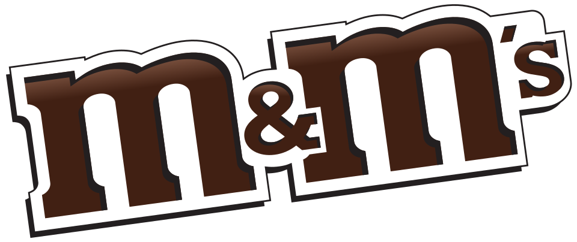

홈 > 브랜드 매거진 > M&M's
M&M's
M&M's는 Mars(마스)가 만든 컬러 설탕 코팅 초콜릿 캔디 브랜드로, 1941년 미국에서 탄생했으며 두 개의 'M'은 창업자 Forrest E. Mars Sr.와 Bruce Murrie의 성에서 유래했다. 둥글납작한 렌즈콩(lentil) 모양의 알갱이와 의인화된 캐릭터인 스포크스캔디(spokescandies)로 널리 알려져 있으며, 2022년 1월 Mars는 jkr가 주도한 글로벌 브랜드 리프레시를 공개했다.
산업 분야 브랜드·비즈니스 · 공개 등급 편집 검수 · 브랜드 평가 4 ★

한눈에 보는 브랜드
M&M's는 Mars(마스)가 만든 컬러 설탕 코팅 초콜릿 캔디 브랜드로, 1941년 미국에서 탄생했으며 두 개의 'M'은 창업자 Forrest E. Mars Sr.와 Bruce Murrie의 성에서 유래했다.
둥글납작한 렌즈콩(lentil) 모양의 알갱이와 의인화된 캐릭터인 스포크스캔디(spokescandies)로 널리 알려져 있으며, 2022년 1월 Mars는 jkr가 주도한 글로벌 브랜드 리프레시를 공개했다.
브랜드 관점
M&M's의 정체성은 소문자 'm' 한 글자를 얹은 컬러 캔디 셸과, 이를 그대로 의인화한 컬러 캐릭터에서 나온다. 딱딱한 설탕 코팅(캔디 셸)은 손에서 녹지 않는다는 물성을 디자인 언어로 전환했고, 이는 'Melts in your mouth, not in your hand'라는 오랜 슬로건으로 고정되었다.
마즈는 레드·옐로·그린·브라운·블루·오렌지로 이어지는 색을 각각 성격을 지닌 캐릭터('spokescandies')로 키워, 색이 곧 인물이자 광고 주인공이 되는 구조를 만들었다. 2022년 1월 20일 마즈는 이 캐릭터들의 외형과 성격을 현대적으로 다듬는 리프레시를 단행했고, 같은 해 9월에는 포용성을 표방한 보라색 캐릭터 퍼플을 추가했다.
작은 알맹이 위의 단일 글자, 색이 곧 캐릭터가 되는 등식, 그리고 셸의 물성 자체가 슬로건이 되는 방식이 이 브랜드 디자인의 핵심축이다.
시작과 성장
M&M's는 1941년 포러스트 마즈 시니어(Forrest Mars Sr.)가 만들었으며, 두 개의 'M'은 그와 동업자 브루스 머리(Bruce Murrie)의 성을 가리킨다. 머리는 경쟁사 허쉬의 사장 윌리엄 머리의 아들로, 포러스트 마즈는 자신이 80%, 머리가 20%를 갖는 동업 구조를 제안했고 그 대가로 허쉬가 초콜릿과 설탕, 기술을 댔다.
설탕 코팅이 더운 환경에서도 초콜릿이 녹지 않게 한다는 점에 착안한 이 과자는 1941년 3월 특허를 받았고, 뉴저지주 뉴어크 공장에서 생산이 시작됐다. 미국이 2차 대전에 참전하자 초기에는 군에 독점 공급되어 병사 보급품에 포함됐고, 1947년 일반 대중에 출시되며 본격적으로 확산됐다.
머리는 1949년 자신의 소수 지분을 마즈에 매각했다. 1958년에는 주당 100만 파운드 이상이 팔릴 만큼 수요가 폭발하며 대표 과자로 자리 잡았다.
브랜드 아이덴티티
2022년 리프레시의 핵심 콘셉트는 포용(inclusivity)으로, '모두가 소속감을 느끼는 세상을 만든다'는 새 브랜드 목적을 내세웠다. 시각적으로는 기존의 대각선 로고를 수평으로 바로 세우고 두 M 사이의 앰퍼샌드(&)를 연결의 상징으로 강조했으며, 한 봉지를 쏟았을 때의 색채감을 연상시키는 확장된 컬러 팔레트를 도입했다.
스포크스캔디는 각 캐릭터의 개성을 살리는 방향으로 디자인이 갱신되었다. 타이포그래피는 Monotype가 jkr와 협업해 제작한 브랜드 최초의 전용 서체 'All Together'로, 스마일을 암시하는 잉크 트랩과 캔디를 닮은 볼 터미널, 렌즈콩 형태를 참조한 글자꼴, 다양한 굵기·폭의 가변 폰트를 특징으로 한다.
제품과 서비스
기본 밀크초콜릿(Plain) 외에 1954년 도입된 피넛(Peanut)을 비롯해 아몬드, 피넛버터, 크리스피, 다크초콜릿, 캐러멜, 2010년 4월 출시된 프레첼 등으로 라인이 확장됐다. 각 변형은 견과·웨이퍼·캐러멜 등 서로 다른 속을 같은 컬러 캔디 셸로 감싸 통일감을 유지한다.
그중 Plain과 Peanut이 가장 많이 팔리는 두 종류다.
사람들
현재 상태
M&M's는 마즈 리글리(Mars Wrigley) 부문의 플래그십 제품으로, 100개국 이상에서 판매되는 세계적으로 가장 널리 보급된 초콜릿 캔디 중 하나다.
타임라인
BI/CI 변천사
확인된 BI/CI 이미지가 아직 없습니다.
함께 읽을 브랜드
YO
YO!
브랜드·비즈니스 · 편집 검수YO!YO!는 2016년에 기록된 Designed by Paul Belford Ltd 계열의 브랜드 아이덴티티 사례입니다. Paul Belford Ltd가 아이덴티티 작업...
Me
Meander Valley
브랜드·비즈니스 · 편집 검수Meander ValleyMeander Valley는 2025년에 기록된 Designed by For the People 계열의 브랜드 아이덴티티 사례입니다. For The People가 아...
 브랜드·비즈니스 · 편집 검수Chime
브랜드·비즈니스 · 편집 검수ChimeChime는 2024년에 기록된 Designed by jkr 계열의 브랜드 아이덴티티 사례입니다. jkr, Marco Palmieri가 아이덴티티 작업의 디자이너로...
 브랜드·비즈니스 · 편집 검수Deezer
브랜드·비즈니스 · 편집 검수DeezerDeezer는 2023년에 기록된 Designed by Koto 계열의 브랜드 아이덴티티 사례입니다. Koto가 아이덴티티 작업의 디자이너로 기록되어 있습니다. 공개...
 브랜드·비즈니스 · 편집 검수Fanta
브랜드·비즈니스 · 편집 검수Fanta환타는 코카콜라 컴퍼니가 보유한 과일향 탄산음료 브랜드로, 오렌지를 비롯한 다양한 과일 풍미를 밝고 경쾌한 색감으로 표현하는 것이 특징이다. 1940년 제2차 세계대...
St
Story Espresso
브랜드·비즈니스 · 편집 검수Story EspressoStory Espresso는 2021년에 기록된 Designed by For the People 계열의 브랜드 아이덴티티 사례입니다. For The People가 아...
 브랜드·비즈니스 · 편집 검수Time
브랜드·비즈니스 · 편집 검수TimeTime는 2023년에 기록된 Designed by For the People 계열의 브랜드 아이덴티티 사례입니다. For The People가 아이덴티티 작업의 디...
Au
Autex Acoustics
브랜드·비즈니스 · 편집 검수Autex AcousticsAutex Acoustics는 2022년에 기록된 Designed by Marx 계열의 브랜드 아이덴티티 사례입니다. Marx Design가 아이덴티티 작업의 디자이...